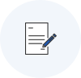
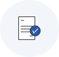

무역조정지원사업


사업목적
FTA 이행에 따른 수입증가로 무역피해를 입었거나 입을 것이 확실한 중소기업에 융자 및 컨설팅을 통한 경쟁력 회복 지원
지원대상
FTA체결 상대국*으로부터의 수입증가로 무역피해를 입은 기업으로서 제조업 또는 서비스업을 2년 이상 영위하면서 아래의 기준을 충족하는 기업
* 16개 협정(총 57개국) : 칠레, 싱가포르, EFTA, ASEAN, 인도, EU, 페루, 미국, 터키, 호주, 캐나다, 중국, 베트남, 뉴질랜드, 콜롬비아, 중미(2019.12월말 기준)
1 전체 매출액(생산량)과 피해품목(생산량)의 매출액 감소
- 무역피해를
입었을 경우 -
피해인정기간
지정신청일 이전 2년 이내 발생
피해정도 및 비교시점
- 6개월 또는 1년간의 총매출액 또는 생산량이 그 직전년도 동일기간과 비교하여 10%이상 감소
- 또는 영업이익, 고용, 가동률, 재고 등을 종합적으로 고려한 상기 피해에 상당하는 것으로 인정되는 경우
- 무역피해를 입을
것이 확실한 경우 -
피해인정기간
지정신청일 이후 1년 이내 발생
피해정도 및 비교시점
- 6개월 또는 1년간의 총매출액 또는 생산량이 그 직전년도 동일기간과 비교하여 10% 이상 감소가 예상되는 경우
(단, 영업이익, 고용, 가동률, 재고 등의 변화를 종합적으로 고려함)
* 경영안정 및 경쟁력 확보 상담지원(컨설팅)은 5%이상 감소(예상)되는 경우
2 FTA체결 상대국으로부터 주생산품목과 동종 또는 대체 가능한 제품(서비스)의 수입 증가
- 무역피해를
입었을 경우 -
- 판단기준 : 용도, 유통경로, 물리적특성(구성요소), 품질, 관세품목분류번호(HS코드), 대체사용가능성 등
- 기업 생산물품과 수입물품이 동종 또는 직접적 경쟁상품일 것
- 동종 또는 대체가능한
제품(서비스) -
- 관세품목분류번호(HS코드) 6~10단위 기준
- 해당 HS코드의 관세율이 FTA발효에 따라 인하 또는 철폐될 것
- 수입량이 FTA체결후 10% 이상 추세적으로 증가할 것
지원절차
- 승인신청일 현재 3년 이상 계속하여 사업을 영위하며, 상시근로자수가 5인 이상인 중소기업으로 다음 업종 조건을 만족하는 기업

- STEP 01
- 신청
(기업)

- STEP 02
- 신청서 작성지원
(중진공)
- STEP 03
- 무역피해 판정
(중진공)

- STEP 04
- 무역조정 지원기업 지정
(산업통산자원부)
- STEP 05
- 융자·컨설팅연계지원(3년간)
*융자지원전 무역조정계획
적합성 평가 必 (중진공)
* 컨설팅은 사전진단 및 수행계획 적합성 평가를 거쳐 지원 대상 선정
- 경영안정 및 경쟁력 확보 상담지원(컨설팅)
- STEP 01
- 신청
(기업)
- STEP 02
- 신청서 작성지원
(중진공)
- STEP 03
- 무역피해 판정
(중진공)
- STEP 04
- 사전진단 및 수행계획
적합성 평가 (중진공)
- STEP 05
- 컨설팅 지원
(중진공)
지원내용
융자지원
- 신청대상 : FTA체결 상대국으로부터 무역피해가 인정되어 무역조정지원기업으로 지정받은 기업
* 융자신청은 산업통상자원부의 무역조정지원기업 지정일로부터 3년 이내
융자범위
- 시설자금
- 생산설비 및 시험검사장비 도입 등에 소요되는 자금
- 정보화 촉진 및 서비스제공 등에 소요되는 자금
- 공정설치 및 안정성평가 등에 소요되는 자금
- 유통 및 물류시설 등에 소요되는 자금
- 사업장 건축자금, 토지구입비, 임차보증금
* 토지구입비는 건축허가(산업단지 등 계획입지의 입주계약자 포함)가 확정된 사업용 부지 중 6개월 이내 건축착공이 가능한 경우에 한함
- 사업장 확보(매입, 경·공매)자금
* 사업장 확보자금은 사업영위 필요에 따라 기업당 3년 이내 1회로 한정 지원 - 운전자금
- 제품생산 비용 및 기업경영에 소요되는 자금
융자조건
- 대출금리 : 연 2.0% 고정금리 적용
- 대출기간
- 시설자금 : 10년 이내(거치기간 5년 이내 포함)
* 시설자금 신용대출은 거치기간 4년 이내
- 운전자금 : 6년 이내(거치기간 3년 이내 포함) - 대출한도
- 융자계획 공고 2.공통사항의 ‘개별기업당 융자한도’ (운전자금은 연간 5억원 이내)
* 단, 수출향상기업(최근 1년간 직수출실적 50만불 이상이며 20% 이상 증가), 최근 1년간 10인 이상 고용창출 기업, 최근 1년간 10억원 이상 시설투자기업(금회 포함)의 운전자금은 연간 10억원 이내
* 업종별 융자제한 부채비율 기준 예외 적용 - 융자방식
- 중진공이 자금 신청·접수와 함께 기업평가를 통하여 융자대상 결정 후, 중진공(직접대출) 또는 금융회사(대리대출)에서 대출
컨설팅 지원
- 지원대상
- [무역조정 상담지원] FTA체결 상대국으로부터 무역피해가 인정되어 무역조정지원기업으로 지정받은 기업
* 컨설팅 신청은 산업통상자원부의 무역조정지원기업 지정일로부터 3년 이내
- [경영안정 및 경쟁력 확보 상담지원] 매출액(또는 생산량)이 5% 이상 감소한 무역피해기업 중 중진공으로부터 무역피해판정을 통해 승인을 받은 기업 - 지원내용
- 무역조정계획 실행 및 무역피해 극복에 필요한 경영·기술 전 분야
- 지원한도
- [무역조정 상담지원] 기업당 연간 40백만원이내(3년간 다회)
- [경영안정 및 경쟁력 확보 상담지원] 기업당 40백만원이내(1회에 한함) - 지원비율
- 컨설팅 소요비용의 80%
융자상담처
더욱 자세한 상담은 전국에 위치한 중진공 각 지역본(지)부로 문의하여 주시기 바랍니다.